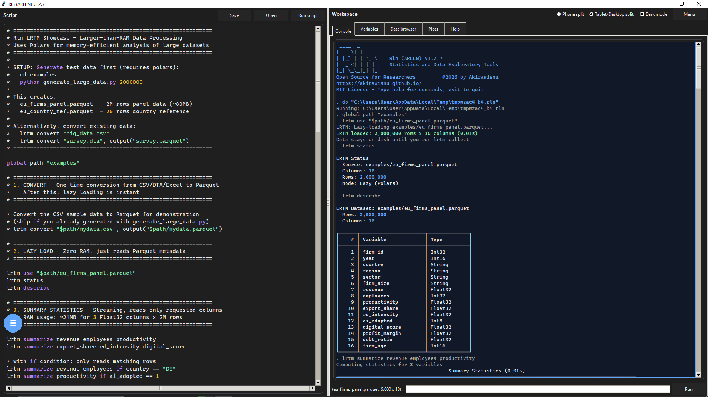
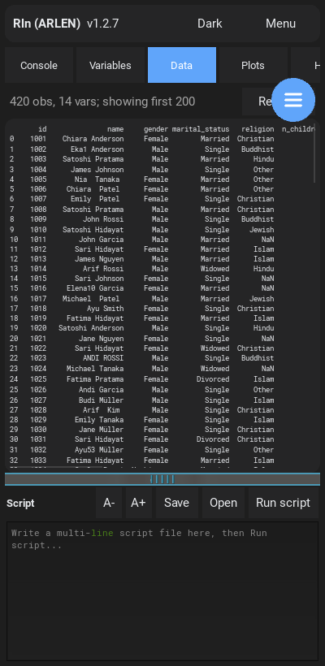
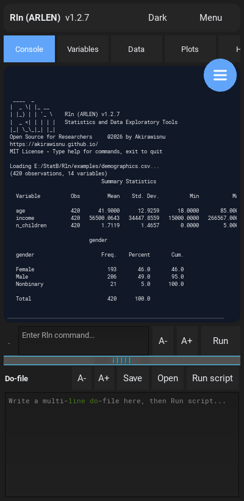
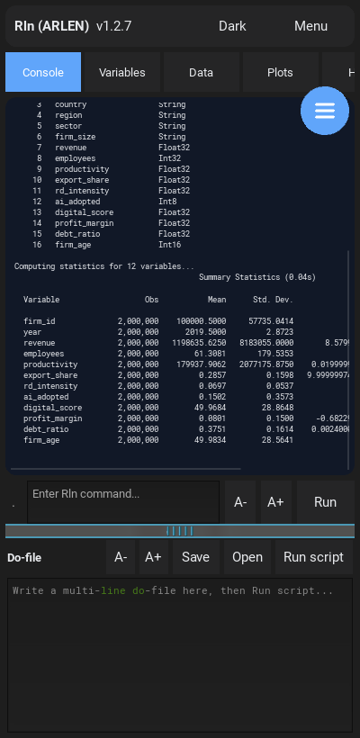
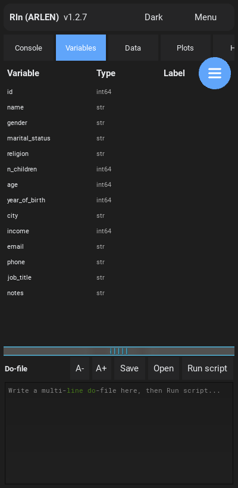
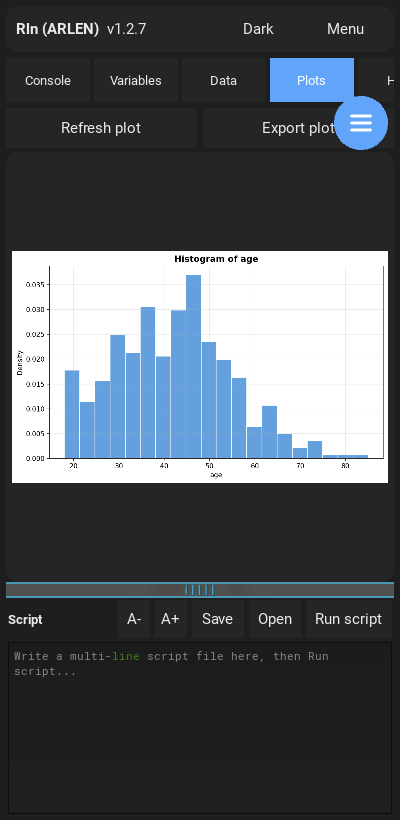
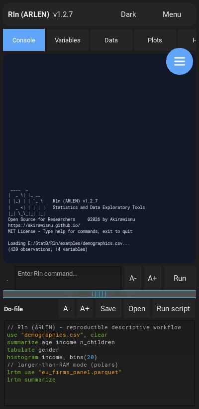

Pick your edition
Two flavors, one command language
The same engine and the same scripts run everywhere. Choose an edition to tailor the install steps and capability map below.
What you get
Full statistics & econometrics (regression, panel, IV, every diff-in-diff estimator), charts, larger-than-RAM streaming, fuzzy merge, and the color-coded data explorer. ~80–120 MB. No NLP (use the offline/full tiers for that).
Best for
Day-to-day analysis on a laptop or workstation — the build most people want. A graphical app and a command-line REPL in one download.
What you get
The full command language, native and offline, with a built-in NumPy/SciPy estimation engine: regress, logit, probit, poisson, panel fixed effects and DiD (TWFE). LRTM streams Parquet with no pyarrow, and a tap shows a live preview. Dark mode and an always-visible script editor.
Best for
Fieldwork and analysis on a phone — millions of rows summarized in a fraction of a second, with your data never leaving the device.
Install
Up and running in a minute
- Download the rln-lite build from the Releases page and unzip it.
- Double-click Rln-GUI.bat for the graphical app, or run rln-lite.exe for the command-line REPL.
- On first launch the file pickers open in the bundled examples folder — try
use "demographics.csv"right away.
macOS and Linux builds run the same way. Prefer source? git clone, pip install -r requirements.txt, then python main.py --gui.
- Download rln-<version>-arm64-v8a-debug.apk from the Releases page.
- Copy it to your phone and open it; allow installs from unknown sources if prompted.
- On the first Open, grant All files access so Rln can read your data (Android 11+ requires this).
Quick tour
A 30-second taste
Type these in the Console — desktop REPL or the phone's Console tab. Bare file names resolve against the shipped examples folder.
use "demographics.csv", clear summarize age income n_children tabulate gender histogram age * larger-than-RAM mode — millions of rows, streamed lrtm use "eu_firms_panel.parquet" lrtm summarize
Watch
See it run
Data exploration and larger-than-RAM statistics — running natively on a phone.
New in 1.2.8
A color-coded data explorer, everywhere
The data browser now reads like a spreadsheet on every edition — numbers in blue, text in orange, missing values muted — using one shared scheme across the desktop GUI, the terminal browser, and the Android app.
# name age income 1 Chiara 48 152270 2 Eka 40 -12872 3 Satoshi . 42747 4 Mwangi 35 98140
Preview Parquet before you load it
Run lrtm use "data.parquet" and the data browser instantly streams a live preview — no full load. Explore the whole dataset after lrtm collect.
Examples open by default
Both editions start in the bundled examples folder, so the sample data and scripts just open. Pin your own with set workdir "…" any time.
Capabilities
What works in each edition
A green tick means it works out of the box. The mobile estimation engine is a validated NumPy/SciPy backend — coefficients, standard errors, and common diagnostics match the desktop output.
| Capability | Lite Desktop | Mobile (Android) |
|---|---|---|
| Read CSV, Stata .dta, Excel, JSON, dBase | ✓ | ✓ |
| Read & stream Parquet (LRTM) | ✓ | ✓ |
| Live Parquet preview before collect | ✓ | ✓ |
| Explore: describe, summarize, tabulate, correlate | ✓ | ✓ |
| Color-coded data explorer | ✓ | ✓ |
| Charts: histogram, scatter, line, twoway | ✓ | ✓ |
| Larger-than-RAM engine (polars) | ✓ | ✓ |
| Linear regression (regress) | ✓ | ✓ |
| Logit, probit, Poisson | ✓ | ✓ |
| Panel fixed effects (xtreg, fe) | ✓ | ✓ |
| Difference-in-differences (TWFE) | ✓ | ✓ |
| IV / 2SLS (ivregress) | ✓ | Desktop only |
| Advanced DiD (Callaway–Sant'Anna, …) | ✓ | TWFE fallback |
| Fuzzy merge (fuzzmerge) | ✓ | ✓ |
| Reproducible scripts + editor | ✓ | ✓ |
| NLP: summarize-text, translate, neural | Offline / Full tier | — |
Highlights
Built for real research workflows
Read anything
CSV, Stata .dta, Excel, Parquet, JSON, dBase, R data — all editions.
Explore & describe
describe, summarize, tabulate, correlate, codebook.
Charts
histogram, scatter, line, twoway — rendered right in the app.
Larger-than-RAM
Stream millions of rows with polars — 2,000,000 summarized in ~0.04 s, even on a phone.
Econometrics
regress, logit, probit, poisson, panel FE, diff-in-diff, IV (desktop).
Fuzzy merge
Approximate-string joins that run on every edition via an automatic backend fallback.
Reproducible scripts
Multi-line .rln / .do scripts with syntax highlighting and an editor.
Examples folder
Sample data and scripts open by default; change the working folder any time.
In action
Screenshots
A full desktop session up top; the phone app shares the same design below — click any image to enlarge.


Data browser (color-coded)
Console exploration
LRTM — 2M rows
Variables browser
Plots
Script editorReference
Command quick reference
A taste of the language — over a hundred commands in total. Filter to find one.
| use · import | Load a dataset (auto-detects format) |
| browse | Open the color-coded data explorer, or browse a file directly |
| describe · codebook | Inspect variables, types, and labels |
| summarize · tabulate | Summary statistics and frequency tables |
| correlate · pwcorr | Correlation matrices |
| generate · replace · egen | Create and modify variables |
| recode · destring · encode | Clean and convert variables |
| sort · gsort · collapse | Order and aggregate data |
| merge · append · fuzzmerge | Combine datasets (exact or approximate) |
| histogram · scatter · twoway | Charts rendered in the app |
| regress · ivregress | Linear and instrumental-variables models |
| logit · probit · poisson | Generalized linear models |
| xtreg | Panel fixed / random effects |
| didregress | Difference-in-differences estimators |
| predict · margins · test | Postestimation |
| lrtm … | Larger-than-RAM streaming with polars (preview before collect) |
| do · doedit | Run and edit reproducible scripts |
| set workdir | Pin the default working folder |
| ssc install | Add optional backends (source installs) |
| help | Full command list and per-command help |